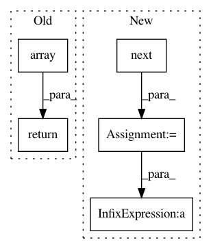

063c572b5b09fb8492beee938589cf5984f84926,art/estimators/classification/ensemble.py,EnsembleClassifier,class_gradient,#EnsembleClassifier#Any#Any#Any#,234
Before Change
`(batch_size, 1, input_shape)` when `label` parameter is specified. If `raw=True`, an additional
dimension is added at the beginning of the array, indexing the different classifiers.
grads = np.array(
[
self._classifier_weights[i] * self._classifiers[i].class_gradient(x, label)
for i in range(self._nb_classifiers)
]
)
if raw:
return grads
return np.sum(grads, axis=0)
def loss_gradient(self, x: np.ndarray, y: np.ndarray, raw: bool = False, **kwargs) -> np.ndarray:
Compute the gradient of the loss function w.r.t. `x`.
After Change
self._input_shape = classifiers[0].input_shape
self._nb_classes = classifiers[0].nb_classes
// Set weights for classifiers
if classifier_weights is None:
classifier_weights = np.ones(self._nb_classifiers) / self._nb_classifiers
self._classifier_weights = classifier_weights
// check for consistent channels_first in ensemble members
for i_cls, cls in enumerate(classifiers):
if cls.channels_first != self.channels_first:
raise ValueError(
"The channels_first boolean of classifier {} is {} while this ensemble expects a "
"channels_first boolean of {}. The channels_first booleans of all classifiers and the "
In pattern: SUPERPATTERN
Frequency: 3
Non-data size: 5
Instances
Project Name: IBM/adversarial-robustness-toolbox
Commit Name: 063c572b5b09fb8492beee938589cf5984f84926
Time: 2020-12-18
Author: beat.buesser@ie.ibm.com
File Name: art/estimators/classification/ensemble.py
Class Name: EnsembleClassifier
Method Name: class_gradient
Project Name: IBM/adversarial-robustness-toolbox
Commit Name: 063c572b5b09fb8492beee938589cf5984f84926
Time: 2020-12-18
Author: beat.buesser@ie.ibm.com
File Name: art/estimators/classification/ensemble.py
Class Name: EnsembleClassifier
Method Name: loss_gradient
Project Name: SpiNNakerManchester/sPyNNaker
Commit Name: 50c97e8e67f93b09a1dd4b464732d48c704f6526
Time: 2018-06-04
Author: Andrew.Rowley@manchester.ac.uk
File Name: spynnaker/pyNN/models/neural_projections/connectors/multapse_connector.py
Class Name: MultapseConnector
Method Name: gen_connector_params